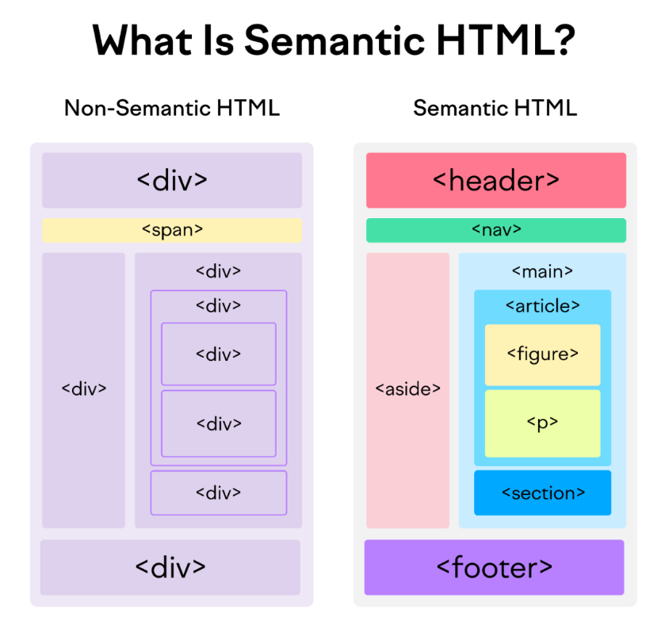

Article 1: Importance of Semantic HTML
Semantic HTML helps search engines and assistive technologies understand your content better.

Using semantic HTML elements for better structure
Semantic HTML helps search engines and assistive technologies understand your content better.
Using semantic tags makes code more readable, structured, and easier to maintain.